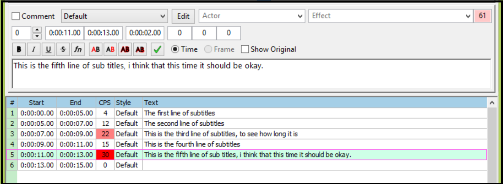
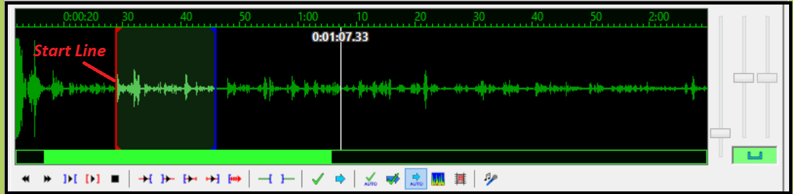
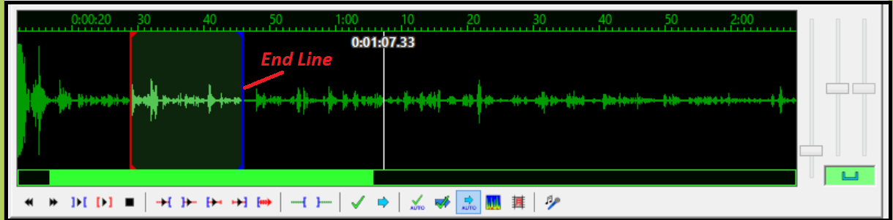
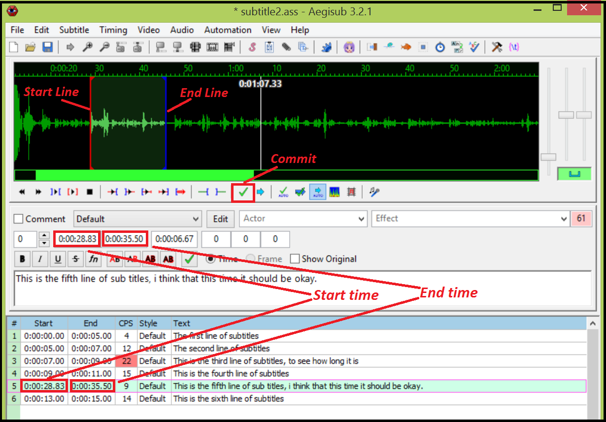
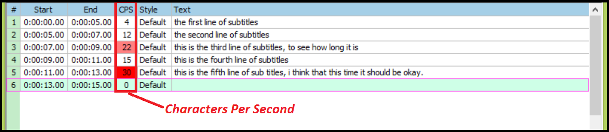
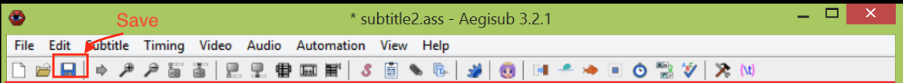
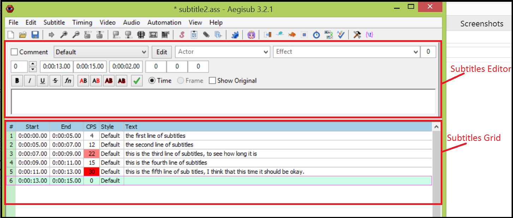
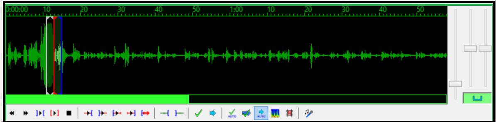

Timing Subtitles to Audio
Timing subtitles to audio is a critical task when adding subtitles to a video because it allows audience to see the subtitles at the same time while listening to the corresponding scripts. Every line of subtitles needs to be timed to match its audio presentation.
To time subtitles to audio:
- From main menu, click File | Open Subtitles... to open a subtitle file.
Subtitles display in the subtitles grid. - From main menu, click Audio | Open Audio File... to open your audio file for adding subtitles.
- In the subtitles grid , click the subtitle line you want to time to audio. The selected subtitle line displays in the subtitles editor.

- In the audio area, click (play button) to play and listen to the audio. When you locate the start time point of the corresponding speech, click and drag the red line (start line) to the start point.

- In the audio area, click to play and listen to the audio. When you reach the end time point of the speech, click and drag the blue line (end line) to the end point.

- Under the wave form, click (commit button). The start and end time points are set up for the subtitle line.

- Look at the CPS field in the subtitles grid (multi-line subtitles area):
- If the CPS field is red, adjust the length of this subtitle line (See "Editing Subtitles").
- If the CPS field is not red, this subtitle line is successfully timed to the audio.

- From the Toolbar, click (save button) to save your work for this subtitle line.


Audio displays in waveform in the audio area.

After you finish all subtitle lines, from menu, click Save | Subtitles to save the subtitle file; then click Aegisub | Quit Aegisub to quit the Aegisub program.
Congratulations! Now, you have successfully finished timing subtitles for your first video.